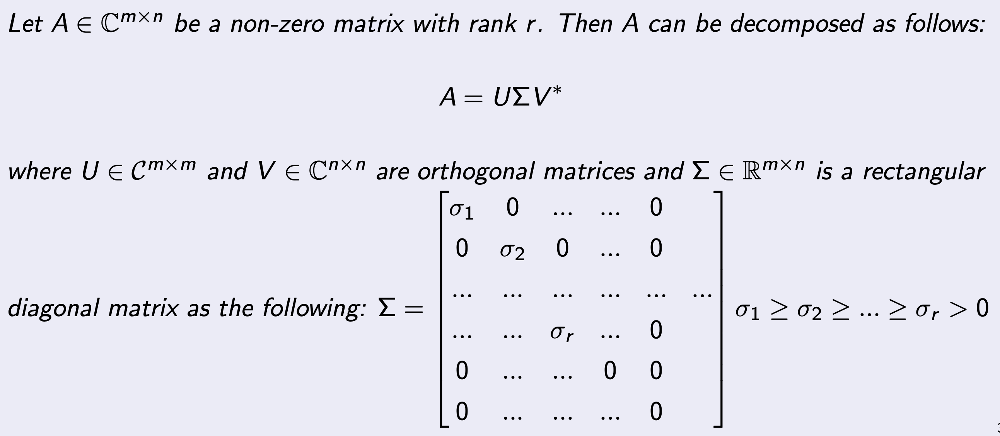
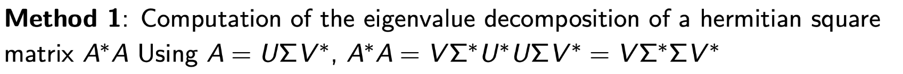
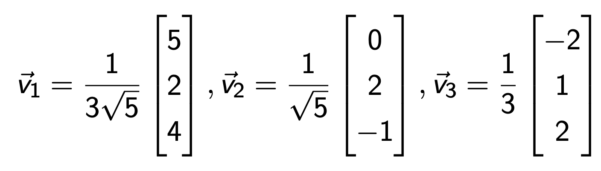

Singular Value decomposition(SVD) - part2
정말 중요하고 또 중요한 내용이라 part2에서 더 깊숙히 들어가 이해해보자.
Eigen value decompositon(EVD)
Singular Value decomposition(SVD)
이 두가지는 정말 거의 모든 영역에서 쓰인다.
머신러닝의 회귀모델, 분류모델,
고체역학에서 탄성이론
유체역학의 점성유동
이 모든 것들에는 방향성이 존재하고,
이 방향성을 수학적으로 다루는 도구인 'tensor'를 사용하는 이상
EVD, SVD는 그냥 무조건 쓰인다.
배워도 배워도 계속해서 까먹기 때문에,
(그냥 무한 반복하는 수밖에 없다...)
무엇보다 논리적으로 이해하는게 가장 중요한 것 같다.
추상적인 개념들을 머리속에서 그리는 연습.
=== === === === === === === === === ===
SVD의 정의는 지난시간에 배운 내용 그대로 다음과 같다.

핵심은 조건에 상관없이
"모든 모든 모든"
m x n Matrix 를 위와 같이 쪼갤 수 있다는 것이다.
(모든 이기에 가장 강력한 도구이다)
쪼갠 조각들을 살펴보자.
U: Left singular Matrix
(Orthogonal)
V: Right singular Matrix
(Orthogonal)
Σ: Rectangular Diagonal Matrix
가운데 시그마 matrix를 위에서 보면, 0인 대각 성분들이
n > r 부분
에 존재하는 것을 알 수 있다.
그 쓸모없는 부분을 그냥 제거해버리고 U,V의 차수를 줄여서 다음과 같이
Reduced Singular Value Decomposition
도 가능하다.
그렇다면, 이런 질문이 든다. 하나의 A에 대해서 여러 분해가 가능할까???
정답은,
Σ
는 유일하지만,
U, V
는, A - n x n Matrix 일때만 유일하고,
나머지는 여러개가 존재할 수 있다.
그렇다면, 어떻게 도대체 저렇게 모든 A에 대해
분해가 가능한거지??? How come
그 이유는 SVD가 어떤 작업인지를 이해하면 자동으로 납득이 된다.
Matrix A
를 다음과 같이 정의하자.
저 위에 정의된 A의 숫자들은 열벡터들로 구성이 되어 있고,
우리가 익숙한
표준 기저들 (e1,e2,e3)를 기준
으로
expand되어있는 정도를 나타낸다.
즉, A는 사실 표준기저들을 이용해서 표현된 부산물이라는 것이다.
그렇다면, 이 A를 다른 표준벡터(기저벡터)로 표현한다면?
즉,
표현하는 기저벡터에 따라
같은 행렬을
다르게 표현할 수 있다는 것이다.)
=============================================
그렇다면, 표현하는 방식에 따라서 어떠한 모습이 바뀌지만,
불변하는 무엇인가
가 있지 않을까???
그 불변하지 않는 무엇인가가
->
eigen vectors, eigen values
이다.
=============================================
위 개념을 가지고
면 지금부터 벡터 x를 변환해보자.
1번과정을 보면, x를 A로 mapping하여 y로 만들어주고,
U로 다시한번 벡터를 변환시켜준다.
2번 과정은 Vx로 벡터를 전환해주고, sigma를 곱해주면,
Diagonal Matrix이기 때문에 elongation을 진행해주는 것.
즉, x를 다른 방식으로 변환하였고,
A가 어떤 값이든지, 같은 변환을 sigma, V, U로 가능하다는 것이다.
for all A
U는 Orthogonal Matrix이므로 넘겨주면,
자 다시. 1,2 과정을 살펴보자.
U(Ax)가 의미하는 것은,
:Ax를 U의 열벡터들을 기저로 삼았을 때의 좌표
Vx가 의미하는 것은,
:x를 V 의 열벡터들을 기저로 삼았을 때의 좌표
이해하기 위해서, x' 을 V* x 벡터라고 가정하자.
이를 정리해보면 다음과 같다.
x1' 은 x벡터에서 v1방향을 나타내는 값.
애매모호한 개념이지만 우리가 이미. 사용하고 있었다.
x1 은 e1방향으로의 값,
x2는 e2방향으로의 값
이라는 사실은 누구나 다 알 고 있다.
사실은 위 내적 과정이 빠진 것이었다.
정리하면, 1,2 과정은 U,V의 기저벡터로의 전환이고,
전환된 벡터가 같을때 아래 SVD가 성립된다.
결론적으로, 마지막으로 정리하면
모든 행렬은
표현하는 기저벡터
에 따라 다르게 생겼다.
(사람은 염색, 성형, 성장하면서 바뀌지만, but 이름은 바뀌지 않는다)
(행렬에게 이름은 고유벡터, 고유값)
위 논리로, 우리는 모든 A를 다음과 같이 바꿀 수 있다.
A -> Σ
(diagonal Matrix)
위 과정을 가능하게 해주는 변환도구로,
2개의 기저벡터 집합
이 필요하다.
그 집합이
U: Left singular Matrix
(Orthogonal)
V: Right singular Matrix
(Orthogonal)
==============================================================
이와 다르게 비슷하지만 두개의 기저벡터 집합이 아니라 하나의 집합으로 분해한.
eigen value decomposition
의 핵심은
A의 고유벡터를 기저벡터로 사용하여 변환가능하다는 것.
A -> Σ
심지어 sigma는 eigen value들이 대각성분을 이룬다는 것.
SVD와 차이점은, 1개의 bases로 표현한다는 것
A : n x n square Matrix이어야만 한다는 것.
===========================================================================
놀랍게도 지금까지 복습이었고,
이제 진짜 SVD를 컴퓨터로 어떻게 연산하는 지를 알아보자.
(우리의 주제는 Computational linear Algebra임을 잊지말자 ^^ (저에게 하는 말입니다.))
총 2가지 방법이 존재한다.
EVD Hermitan Matrix AA or AA
바로 첫번째 방법부터 살펴보자.
원리는 간단하다
A -> AA (Hermitian Square Matrix)로 전환
해주는 것.
H = AA라고 하면, H는 Square Matrix이기 때문에 EVD가 가능해진다.

즉 V는 H의 Eigen vector이 열벡터인 Matrix
ΣΣ 는 eigenvalues가 대각성분인 행렬!!!!!
V,
Σ 를 AA로부터 구할 수 있으니, U를 구하는 것은 식은죽 먹기이다.
(분해성공)
자세한 과정은 다음과 같다.
바로 예시로 들어가보자.
AA 이든 AA이든 둘다 Hermitan 이므로 상관이 없다.(편한걸로)
따라서,
ΣΣ 는 eigenvalues가 대각성분
(singular value of A) ^2 = (Eigen value of AA or AA)
V는 AA의 Eigen vector이 열벡터로 이루어진 Matrix이므로,
eigen vectors of AA = U
이제 마지막으로 V만 구하면 SVD성공이다.
간단하게 SVD의 정의를 활용하면
한편, H = AA의 eigen value = singular value of A ^2이므로 다음과 같다.
위 식의 좌항에 대입해주면, v를 sigma, A, u로 표현가능하다.
따라서,

singular Value decomposition Clear.
이 과정을 사용하려면, 무조건 A*A = H 의 Eigen vector Value를 구하는게 이 과정을 거쳐야 한다.
하지만 위 과정이 가장 컴퓨터 연산이 오래걸리고, 난해한 문제이다.
이제, 마지막으로 두번째 방법을 살펴보자.
Golub-Kahan Bidiagonalization
먼저 A가 square Matrix라면 다소 특이한 Hermitan Matrix를 A로 만들어주자.
한편 A를 SVD해주면, 다음의 관계식을 얻을 수 있다.
이후 H를 EigenValue Decomposition form으로 변환할 수 있다.
따라서 H의 Eigen value, vector를 구한다면 V, U, sigma 3개를 전부다 알 수 있다는 것.
(H는 더 안정적인 Hermitan Matrix이지만, H 2n x 2n Matrix이므로 연산시간이 늘어나는 단점)
다음 m x n Matrix form of A일때를 살펴보자,
아이디어는 생각보다 간단하다. Method1에 적용되어도 안전한 Bidiagonalized Matrix로 A를 바꿔주는 것.
바꿔 주는 방법은 앞뒤로 Orthogonal Matric which works as a Reflector
를 곱해준다.
QR factorization에서 Householder algorithm에서 다루었다 싶이.
우리는 특정한 column의 요소들을 0으로 만드는 방법에 대해서 다루었다.
같은 원리로, 특정한 column을 0으로 만들어 주고, 무엇보다 A의 앞뒤에 U, V를 계속해서
쌓아서 곱해주는게 핵심이다.
그 결과 diagonal term이 아닌 A -> Bidiagonal Term B로 전환된다.
여기서 이제 마지막으로
Method1
을 사용해주어,
B -> Σ
로 전환해주자.
이때 Bidiagonal term은 BB가 훨씬 안정적이고,
condition number도 굉장히 작아서, Method1에서 단점을 보완할 수 있게 된다.
========================================================================
이번시간까지
EigenValueDecomposition,
SingularValueDecomposition
의 수학적 원리를 이해했고,
컴퓨터로 연산하는 알고리즘을 다루었다.
우리의 궁극적인 목표는 A를 분해하여,
Ax = b를 수치적 오차와 컴퓨터 cost를 줄이어 연산하는 것.
이를 위해서 EVD, SVD를 배운것이다!!!!